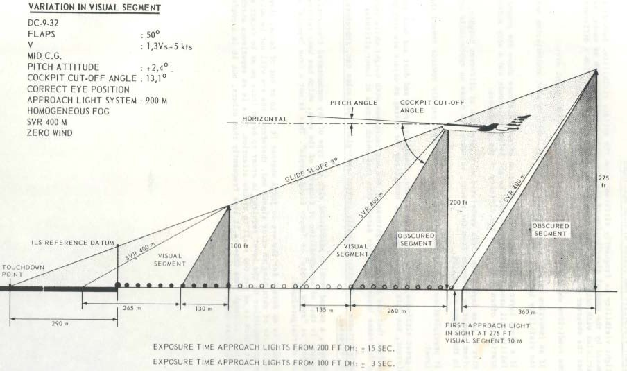

Lesson 02: Seeing in Low Visibility: Visual References and Human Factors
Learning objectives
- Explain why the visual phase is so short in CAT II.
- Define RVR, slant visual range, visual segment and cockpit cut-off angle.
- State the visual reference required at DH.

A short visual phase
In low visibility the instrument phase of the approach becomes longer and the visual phase shorter. At a CAT II DH of 100 ft, the runway is less than 5 seconds away. In CAT III, pilots may see the runway lights only about 5 seconds before touchdown — there is no margin for error.
- The average time for a pilot to switch from outside cues to the instruments and back is about 2.5 seconds — during which a jet travels about 150 m.
- The fovea of the eye is only about 1.5° wide: the lighting patterns must emphasise the centreline.
- Visual workload is manageable when the situation unfolds as expected — but capacity breaks down with ambiguous or transitory cues. Standardisation of lighting and procedures is essential.
Definitions
- RVR — the range over which the pilot on the runway centreline can see the runway surface markings or the lights delineating the runway or its centreline.
- Slant visual range (SVR) — the distance between the pilot's eye and the farthest light the pilot can see.
- Visual segment — the length of approach and runway lighting in view at any one moment.
- Cockpit cut-off angle — the angle below which the ground is hidden by the nose: around 11°–15° depending on the aircraft. On the B737NG the ground is hidden for about 12 m ahead of the pilot during taxi.

From 200 ft to the point where the threshold lights disappear under the nose takes about 10–12 seconds; at 100 ft the exposure time is 3–5 seconds. A rough guide for the minimum acceptable visual segment is about 150 m (5 lights) ahead of the aircraft.
Required visual reference at DH (CAT II)
A CAT II approach may not be continued below DH unless a visual reference of at least a 3-light segment of the approach light centreline, the touchdown zone lights, the runway centreline lights or the runway edge lights — or a combination of these — is attained and can be maintained.

Key takeaways
- At CAT II DH the runway is less than 5 seconds away.
- Visual segment, SVR and cockpit cut-off angle decide what the pilot can see.
- Below DH only with at least a 3-light segment, attained and maintained.
Knowledge check
What visual reference is required to continue a CAT II approach below DH?